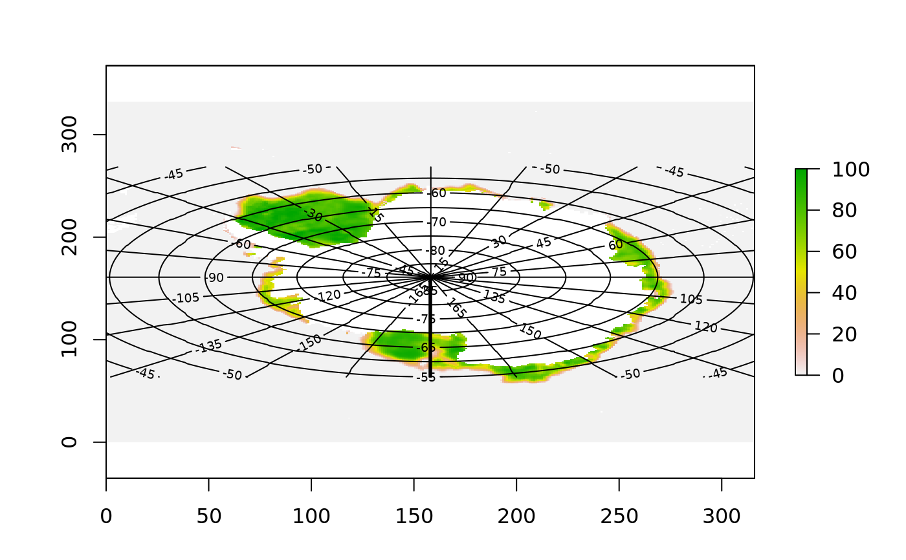

Returns a RasterStack of the given variable names.
romscoords(x, spatial = c("lon_u", "lat_u"), ncdf = TRUE, transpose = FALSE, ...)
| x | ROMS file name |
|---|---|
| spatial | names of coordinate variables (e.g. lon_u, lat_u) |
| ncdf | default to NetCDF no matter what file name |
| transpose | the extents (ROMS is FALSE, Access is TRUE) |
| ... | unused |
RasterStack with two layers of the 2D-variables
The two layers from the model output are used to define the real-world space. This is used to create a boundary romsboundary, to map real-world
objects into grid space romscoords and to generate graticules for mapping into the grid space with graphics::contour.
# NOT RUN { coord <- romscoord("roms.nc") # }## with in-built fake data plot(ice_fake, asp = 0.5)contour(ice_coords[[1]], add = TRUE, levels = seq(-165, 165, by = 15))contour(ice_coords[[2]], add = TRUE)